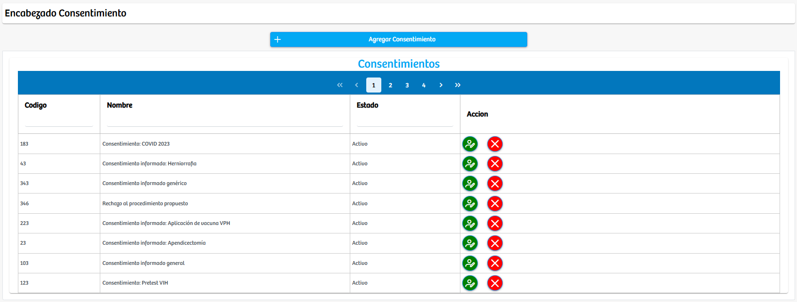

Modulos Sas-Web
Funcionalidades
Parametrizar Consentimientos
Este es un modulo en el cual se busca crear los consentimientos informados para los diferentes procesos que se llevan a cabo en la organización. Esta vista solo nos permite crear el consentimiento y su estado… Los detalles de este se añadiran en el siguiente modulo.
